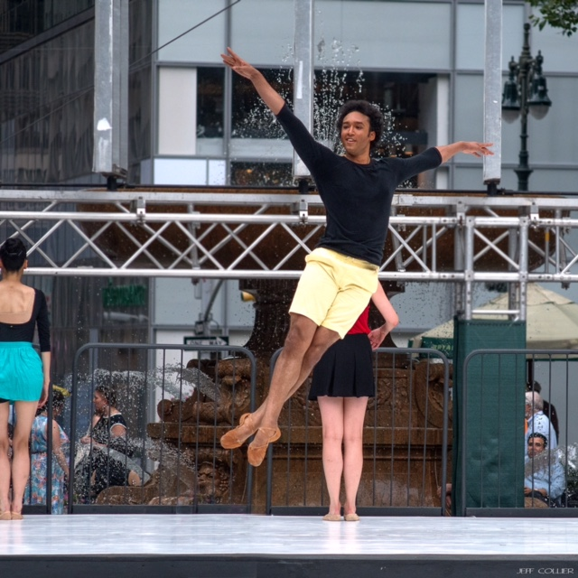
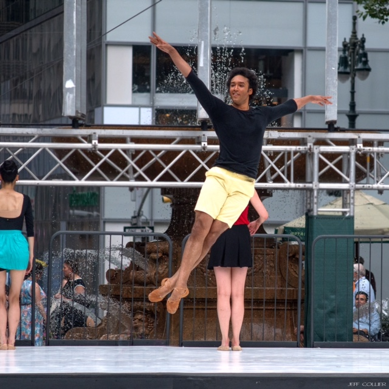
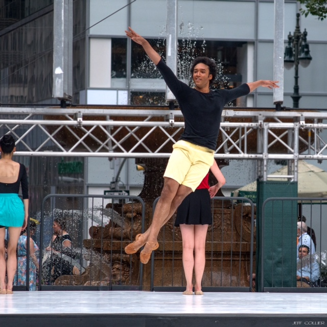

After starting at COCA at the age of 9, dancing with COCADance and being a part of Ballet Eclectica's inaugural season,
Charles moved to Chicago to study at Ballet Chicago. This was his introduction to Balanchine ballet,
and the beginning of a path that brought him to the School Of American Ballet at 15. After performing the lead role in Bourrée Fantasque
in SAB's 2010 workshop performance, Charles moved to Seattle to be a part of Pacific Northwest Ballet's Professional Division.
International Ballet Dancer

Charles performing a solo as a Lead Flying Monkey in The Wizard of Oz at RNZB
and partnering former PNB principal Lindsi Dec in Balanchine's Emeralds.
After dancing professionally with Pacific Northwest Ballet for 4 years,
Charles joined The Royal New Zealand Ballet for a year before returning to the States.
After returning to the States, Charles moved away from concert dance and began to meld his two great loves: singing and dance.
After going on the road in 2018 with the first National Tour of Aladdin, Charles moved into a sound that was a little more home for him:
Jesus Christ Superstar. During the performance he jump, kicked, lifted, and sang his heart out every night
while beforehand he rehearsed and ensured the safety his cast as Fight Captain and assistant Dance Captain.
Onscreen:
At RNZB (The Royal New Zealand Ballet) performing an untitled piece by Loughlin Prior with Tonia Looker.

 
